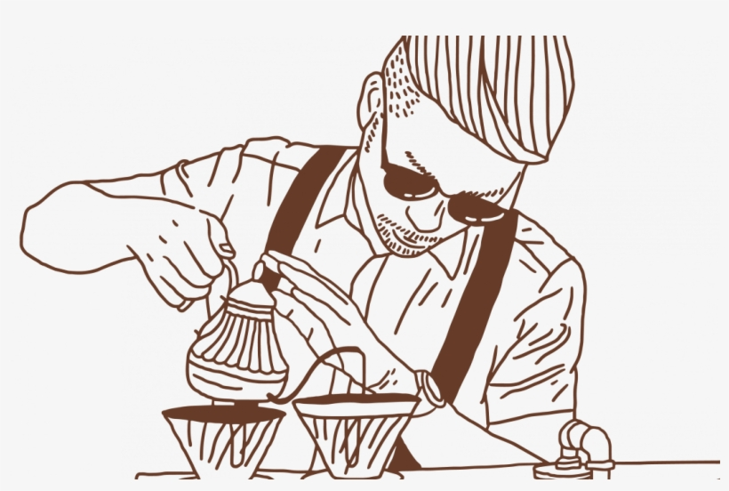

Кто мы
Бариста — это специалист по приготовлению кофе и других напитков на основе кофе в кофейнях и других заведениях общественного питания.
Основные обязанности бариста:
- приготовление эспрессо, капучино, латте, американо и многих других видов кофе;
- консультирование по вопросам выбора напитка, принятие заказов, взаимодействие с посетителями;
- поддержание чистоты рабочего места (уборка, чистка оборудования);
- управление оборудованием (забота о кофемашинах, мельницах и другом оборудовании);
- знание различных сортов кофе, методов обжарки и особенностей каждого напитка;
- подготовка и подача сопроводительных продуктов (выпечка, десерты или другие закуски);
- учёт и инвентаризация (отслеживание запасов продукции, заказ новых поставок при необходимости);
- соблюдение стандартов (корпоративных или качества, установленных конкретной кофейней).
Различные специализации бариста:
- классический бариста (приготовление традиционных кофейных напитков);
- бариста-химик (экспериментирование с различными методами заваривания кофе);
- лате-артист (создание изображений и узоров на поверхности кофейных напитков с помощью молока);
- бариста-тренер (обучение других навыкам приготовления кофе и эксплуатации оборудования);
- бариста-купер (выбор и покупка зелёного кофе).